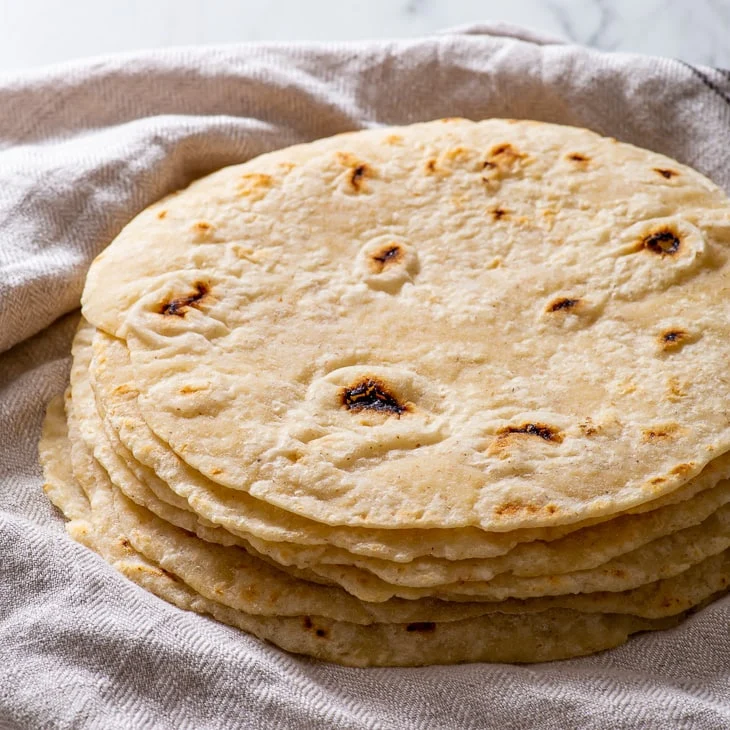

Tortilla, originally a corn flatbread, is one of the essential bread varieties that has been present in Mexican culture for thousands of years. The first tortilla was created out of the staple ingredient of indigenous cultures, the ubiquitous corn. Tortillas are usually used as a foundation and a wrapper to numerous dishes such as tacos, burritos, enchiladas, and quesadillas.
Meal prep time : 40 minutes
Servings : 16